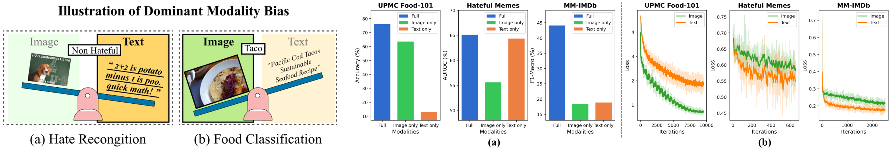
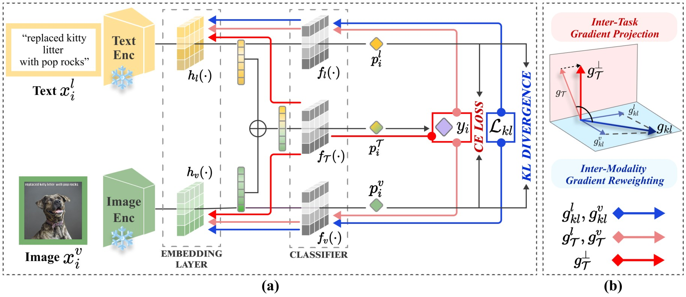
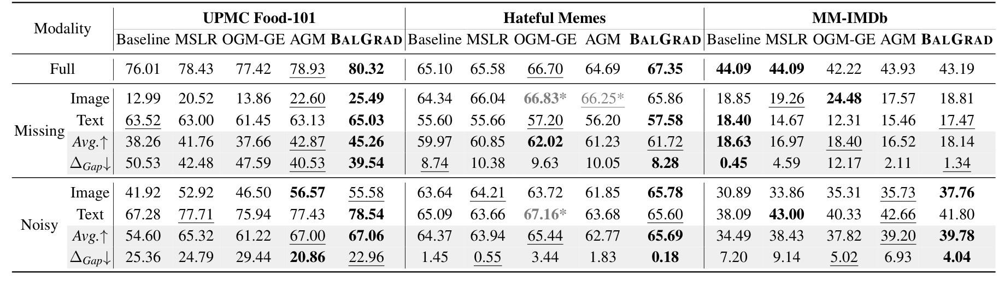

Abstract
Vision-language (VL) models have demonstrated strong performance across various tasks. However, these models often rely on a specific modality for predictions, leading to “dominant modality bias.” This bias significantly hurts performance, especially when one modality is impaired. In this study, we analyze model behavior under dominant modality bias and theoretically show that unaligned gradients or differences in gradient magnitudes prevent balanced convergence of the loss. Based on these findings, we propose a novel framework, BalGrad, to mitigate dominant modality bias. Our approach includes inter-modality gradient reweighting, adjusting the gradient of KL divergence based on each modality's contribution, and inter-task gradient projection to align task directions in a non-conflicting manner. Experiments on UPMC Food-101, Hateful Memes, and MM-IMDb datasets confirm that BalGrad effectively alleviates over-reliance on specific modalities when making predictions.
Analysis on Dominant Modality Bias

Left: The key modality differs by task: text for hate recognition, image for food classification. Right: (a) Performance when one modality is missing. (b) Per-modality training loss.
VL models tend to rely on whichever modality is easier for the task. When one modality is muted at test time, performance on UPMC Food-101 collapses without the image, and Hateful Memes drops sharply without the text, while removing the weak modality barely matters. MM-IMDb, in contrast, degrades similarly for either modality. Training dynamics show the same picture: the loss of the dominant modality falls quickly while the weak modality lags behind. We further show theoretically that balanced convergence of the loss depends on both the magnitude and the direction of each modality's gradient, so unequal magnitudes or conflicting directions let one modality dominate.
BalGrad

(a) Overall training framework of BalGrad. (b) Inter-modality gradient reweighting and inter-task gradient projection.
BalGrad attaches a classifier to each modality and aligns their predictions with a mutual KL divergence. Because naively aligning both modalities ignores their different convergence speeds, inter-modality gradient reweighting rescales the KL gradients according to each modality's learning status. Inter-task gradient projection then checks whether the target task gradient conflicts with the reweighted KL gradient and, if so, projects it onto the orthogonal direction, so that neither objective undermines the balance between modalities.
Results

Results under missing and noisy conditions. ΔGap is the performance difference between image- and text-impaired conditions; gray* indicates negative transfer.
Models are trained on full-modality data and tested with one modality missing or corrupted by noise. When the dominant image is missing on UPMC Food-101, BalGrad improves accuracy from 12.99% to 25.49% while also achieving the best full-modality performance. On both UPMC Food-101 and Hateful Memes it yields the smallest ΔGap in the missing condition, and unlike OGM-GE and AGM, it does so without negative transfer.
BibTeX
@inproceedings{kwon2025seesaw,
title = {See-Saw Modality Balance: See Gradient, and Sew Impaired Vision-Language Balance to Mitigate Dominant Modality Bias},
author = {Kwon, JuneHyoung and Kim, MiHyeon and Lee, Eunju and Choi, Juhwan and Kim, YoungBin},
booktitle = {Proceedings of the 2025 Conference of the Nations of the Americas Chapter of the Association for Computational Linguistics: Human Language Technologies (Volume 1: Long Papers)},
year = {2025}
}